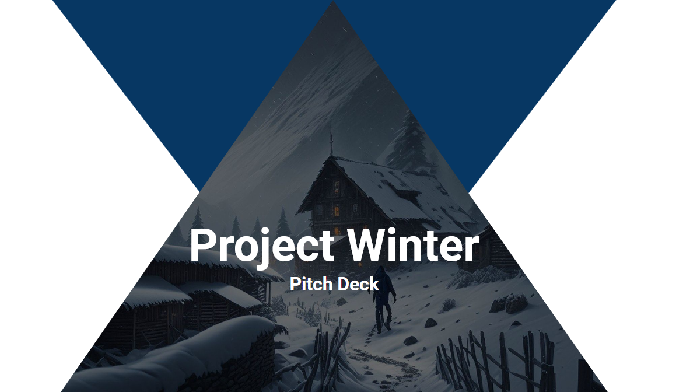
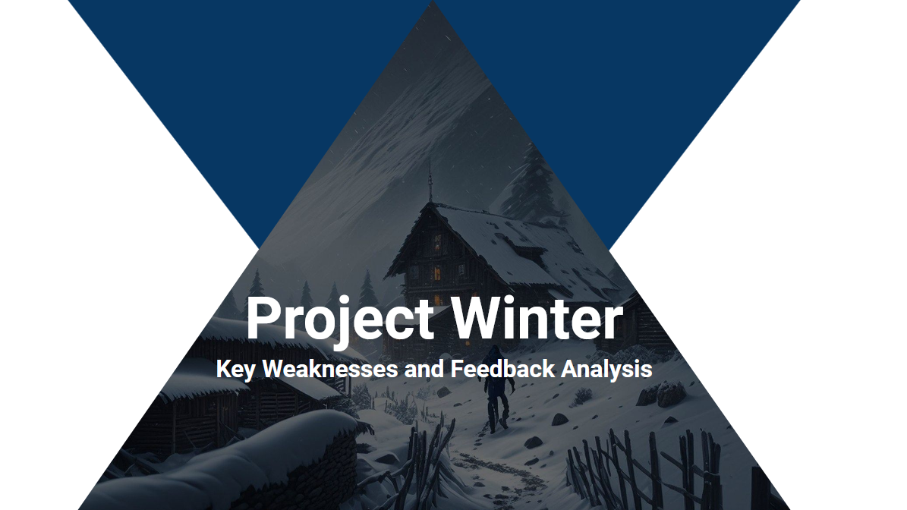

What is The Shattered Peak?
The Shattered Peak is a survival horror game driven by narrative where you must surivive in a freezing cold environment chased by a dangerous entity to uncover the truth behind the mysterious events on the island.
The Shattered Peak features core survival horror systems: you need to manage your body temperature and traverse dangerous zones guarded by a monstrous
creature that will hunt you. In the wilderness you can find tools for survival and collect wood to light up campfires and warm yourself up.
Survival systems are seamlessly integrated with dialogues blended with the environment taking insipiration from Giant Sparrow's "What Remains of Edith Finch" in order to deliver narrative and give direction to players.
Narrative elements can also be found scattered throughout the island as letters and pages.
In The Shattered Peak, you will be immersed in the atmosphere and environment with a diegetic UI and experience-oriented audio design.
Lead Designer - General Game Design
- With the team I defined a set of design goals and used those goals to move the development in a solid unified direction.
- Supervised design choices keeping constant communication with every member of the team assuring that the game's vision was maintained during the whole development.
- Created documentation and presentation as well as held and managed meetings to align the team on important design choices and feedbacks from tests.
- Organized various test rounds with end users to collect feedback to design and develop the game based on players’ feedback as much as possible.
- Designed the overall linear game progression with the team through items and collectibles positioning.
- Systems balancing through tests and player's feedback.
- Made materials and light functions from scratch.
- Helped developers bugfixing doing extensive testing, isolating bugs, and making bug reports.
Level Design
- Created game areas from scratch in UE using landscape and foliage procedural generation tools and also helped designing other areas.
- Used heightmaps obtained from other tools to model a realistic map.
- Created landscape materials for snow and foliage procedural generators to speed up the level creation.
- Collaborated with other designers to ensure a good overall map flow through testing and feedback.
Narrative Design

- Helped other designers with narrative elements, testing how they have been implemented in the game and giving support in fixing design issues.
UI Design
- Menu system flows.
- Solutions to integrate UI elements diegetically.
- Created Main Menu screen, Pause screen and Credits final cinematic using GIMP, and UE Sequence tools.
Audio Design
- Researched and customized audio in Audacity.
- Managed audio in UE and custom Audio System for the game.
- Created Main Menu screen, Pause screen and Credits final cinematic using GIMP, and UE Sequence tools.
Documentation
- Pitch Document - Blockout, Writing and Presentation.
- GDD - Blockout, Management and Writing on Confluence.
- Testing and Feedback analyses - Writing and presentation.
Project Management
- Managed and held meetings with the team.
- Wrote weekly reports to update stakeholders.
- Managed project backlog and task tracking on Jira and Miro.
Documents
Pitch Presentation

Pitch created at the end of the ideation phase to present the idea to stakeholders.
Feedback Analysis 1

Feedback analysis based on the first round of tests feedback. Used during to update the team on the game's weakpoints and the possible design choices and direction to take to mitigate them.
Feedback Analysis 2

Feedback analysis based on the second round of tests feedback. Used during to update the team on the game state in proximity to realease and the results of design choices taken after the first test round.